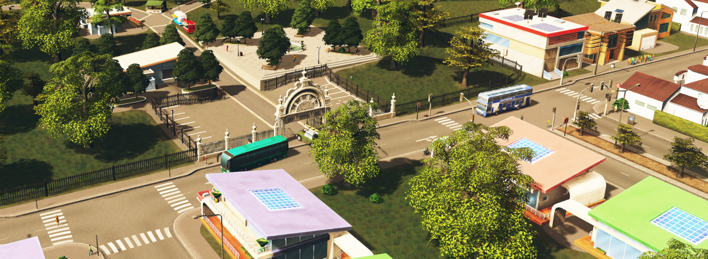
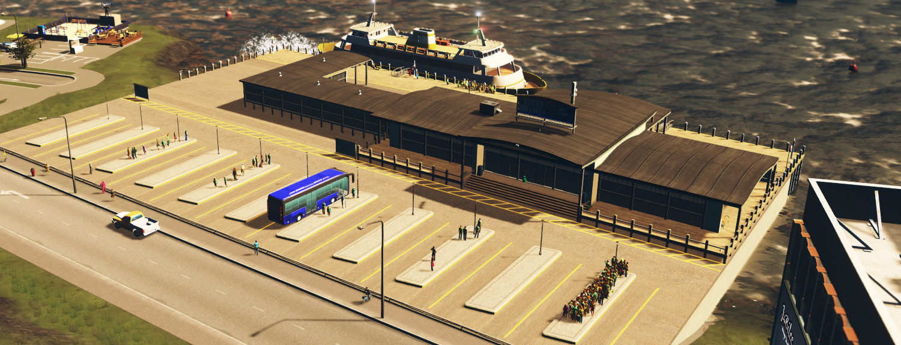
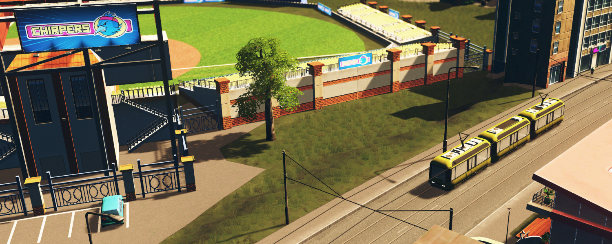
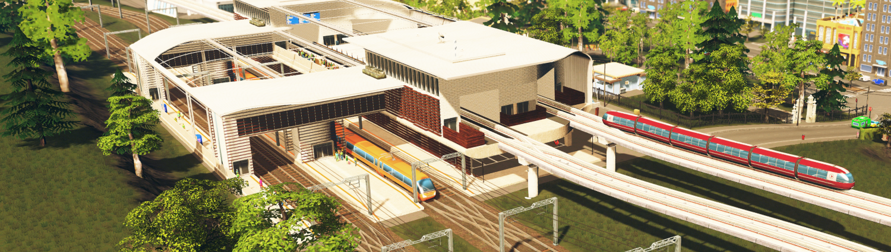
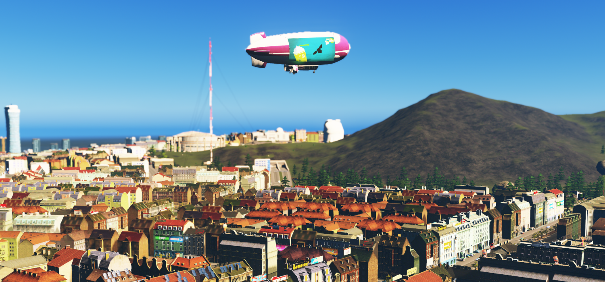

City of Avelburg Tourism - Transportation
No matter what you're doing, you need to get to and from your location and destination, and you want to get there as fast and as cheap as possible. Thankfully for people in Avelburg, the public transport infrastructure has been optimized and improved ever since it was originally constructed.
Bus and Ferry System
For a cheaper and slightly slower ride, the bus or ferry systems are your best bet. Both have hub stations so you can travel from one to the other, down the river or down the boulevards safely and smoothly.
Trams
In the less dense suburbs, trams are king. Especially in the trendy Filgraffi and University City, trams are the number one form of public transportation. Pictured here is the Chirpy Express, named after the mascot of Primrose University.
Trains and Monorails
The quickest way to get from one side of the city to the other are the monorail and train systems. While the monorail mainly services the downtown and beachfront area, the trains go from corner to corner as well as outside of the city as high speeds. They're the quickest option for getting around, and the well-placed hubs such as this one facilitate quick movement from one transport to the other.
Blimps!
As more of a tourist attraction, the skies of Avelburg are filled with blimps! If you have a spare afternoon, feel free to take a sky tour of the city in the gondola of one of the half-dozen blimps that slowly trawl the air and give you social media-worthy shots of the city below!
